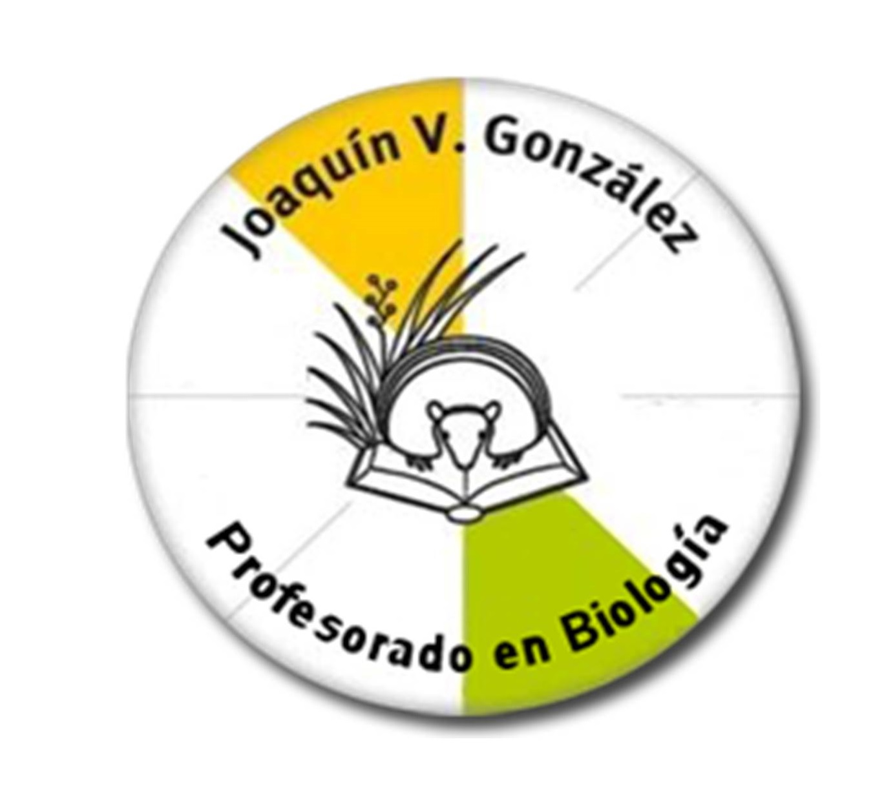

Home
Edificio
Departamento
Biblioteca
Contacto
La Doble Hélice - Agrupación estudiantil
Departamento

Este espacio fue creado para que conozcan nuestra comunidad educativa y puedan acercarse a las tareas que llevamos a cabo. También servirá como puente entre docentes, alumnos y todas aquellas personas interesadas en la enseñanza de la Biología o en la Educación en general.
Consideramos que una característica constante de la vida en el planeta Tierra es el cambio, por esta razón, este espacio se irá adaptando a las necesidades e intereses de los integrantes del departamento.
Esperamos que el recorrido que les ofrecemos les sea agradable, útil e interesante.
Información de la Carrera
Director del Departamento:
- Prof. Francisco Velasco fr_velasco@yahoo.com.ar
- Horario de atención: martes de 15.30 a 17.00 y jueves de 18.00 a 19.00
Coordinadora General:
- Prof. Marina Mateu marinamateu@hotmail.com
- Horario de atención: jueves de 16:10 a 17:10 y de 20:10 a 21:10
Coordinadora Turno Tarde:
- Prof. María José Alonso vivalabiologia@yahoo.com.ar
- Horario de atención: viernes de 14.10 a 15.30
Coordinador de Turno Vespertino:
- Prof. Diego Ródano diegorodano@hotmail.com
- Horario de atención: jueves 20:10 a 21:30